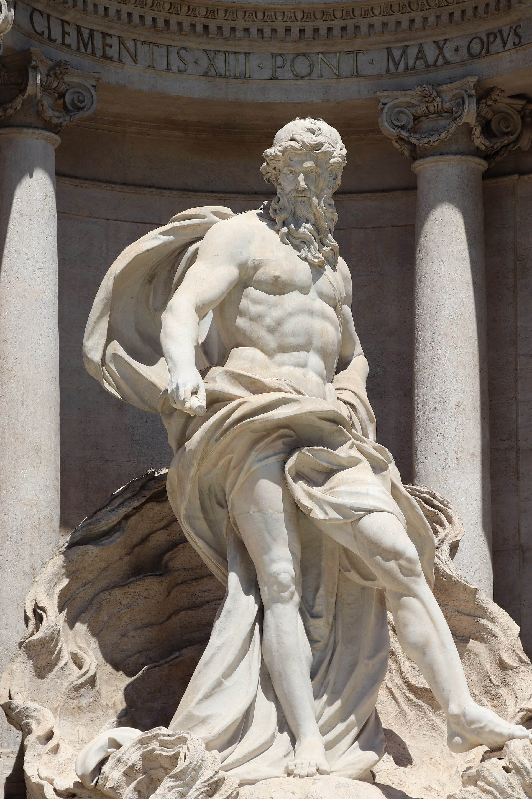

高 26 米、宽 49 米的巴洛克晚期巨作，尼古拉·萨尔维设计、1762 年完工：海洋之神尼普顿驾驭贝壳战车冲出宫殿立面，整面墙成为水的舞台。全球最著名的喷泉，没有之一。
看点路线
Il Percorso
- 1正面看全景：尼普顿战车 + 两匹马（“暴怒”与“平静”）
- 2右侧的“试杯石”：传说萨尔维为报复总在旁边吵闹的理发师而设计的挡视线石
- 3投币：背对喷泉，右手持币越过左肩抛入——一枚重回罗马
- 4傍晚灯光亮起后再来一次：白天的许愿池与夜里是两件作品
雕塑看点
La Fontana · 4 个细节

尼普顿与两匹海马
中央壁龛里的海洋之神由布拉奇完成。战车两侧两匹马一躁一静，象征大海的两种脾气——这个“情绪对照组”后来成了无数喷泉的模板。
健康之水与少女传说
喷泉接的是古罗马少女渡槽（Acqua Vergine）——公元前 19 年阿格里帕的工程师靠一位少女（virgo）指点找到泉眼。1453 年教皇尼古拉五世修复渡槽，罗马“文艺复兴治水”的第一根水管就通向这里。
教皇徽章与权力签名
喷泉顶部盾徽属于克莱门特十二世——他从一个建筑竞赛里挑中了萨尔维的设计，据传原因是“最便宜”。巴洛克的极致奢华与教皇国的预算政治，同一块石头上签字。
大石贝与礁石
整座喷泉的底层逻辑是“自然驯服建筑”：宫殿立面被假想成礁石崩裂，神话从裂缝里冲出来。站在左侧看大理石的“礁石”处理——它同时是建筑、雕塑与舞台布景。
历史故事
Le Storie
壹一枚硬币的经济学
许愿池每天捞出约 3000 欧硬币，一年约 140 万欧--全部捐给天主教慈善机构 Caritas，用来运营罗马的免费食堂与救助站。
投币规则出自 1954 年电影《罗马之恋》：一枚重回罗马、二枚遇见真爱、三枚结婚。电影主题曲拿了奥斯卡，规则成了全球游客的标准动作。
从池里“借”硬币是刑事犯罪--2017 年一位罗马男子因此被捕。善意的水池，法律边界也很清晰。
贰《甜蜜的生活》与半夜的喷泉
1960 年，费里尼的《甜蜜的生活》让全世界的战后青年记住了这个画面：安妮塔·艾克伯格穿着黑裙蹚进喷泉水。半个多世纪后，仍有游客试图效仿--罚款最高 500 欧。
喷泉因此成为“电影朝圣地”清单第一名：从《罗马假日》到《爱在罗马》，罗马的城市宣传片一半场景在许愿池取景。
最好的观影时间是夜里 23 点后：旅行团散场，喷泉只剩水声与灯光--费里尼镜头里那种魔幻的安静，只有这个时段能免费体验到。
叁“便宜方案”的胜利
1730 年代的喷泉设计竞赛堪称罗马建筑界的一场混战：多位重量级建筑师提交方案，最终中标的是相对年轻的尼古拉·萨尔维。
流传的说法是教皇克莱门特十二世选他的原因之一是“报价最低”。但省钱不省戏：萨尔维把整面宫殿立面变成舞台，水从“礁石”间涌出，开创了“喷泉即剧场”的类型。
萨尔维 1751 年去世，没等到 1762 年完工。今天你看到的最后一个音符，是他的学生替他按下的。
肆少女的渡槽
喷泉接的是公元前 19 年的“少女渡槽”（Acqua Vergine）--传说阿格里帕的工程师找水源时，一位本地少女（virgo）指出泉眼，渡槽因此得名。
这条渡槽公元 537 年被哥特军队切断，沉睡近千年--1453 年教皇尼古拉五世修复，文艺复兴罗马的第一项大市政工程就是让水重新流回这里。
立面上方的浮雕讲的就是这个传说：少女指路，士兵引水。看懂这面墙，就看懂了这座城市和水的两千年契约。
伍教皇的签名与“水的宣称”
喷泉顶端的盾徽属于克莱门特十二世（科西尼家族），中部另两处徽章属于后续教皇--文艺复兴与巴洛克的罗马，每一项城市工程都是教皇的“政绩签名”。
水从郊外山泉一路穿城而来，在贵族宫殿的墙前喷涌--“谁给你水，谁就是你的恩主”是当时最直白的权力语言。
看喷泉时把它当一份“用水合同”读：甲方是神与教皇，乙方是罗马，见证人是海神。
陆《罗马假日》引爆的朝圣
1953 年《罗马假日》上映前，许愿池只是罗马众多名胜之一。赫本与派克的罗马一日游路线（真理之口-西班牙阶梯-许愿池）让这座城市在战后变成全球初恋的布景。
“赫本效应”延续至今：女孩们穿着裙子在池边复刻那一枚硬币的抛物线，裙子样式七十年换了十几轮，动作没变。
一部电影给一座城市贡献了七十年的客流量--好莱坞是罗马最有效（虽然没收钱）的旅游局。
柒禁止入水的一百年
从《甜蜜的生活》之后，“进喷泉”就成了罗马警察与游客的持久战。2010 年代起警方开始高额罚款：入水者 €450 起，2019 年后进一步升级。
2023 年的补充规定连“坐在池边吃冰淇淋”也一并禁止--不是不浪漫，是每天三万人次的流量下，大理石真的会累。
正确姿势只有一种：背对喷泉、右手越过左肩、硬币入水。其余动作，交给罚款单。
捌没有水的许愿池
1998 年与 2014 年，喷泉两度排空大修：裸露的池底、干涸的礁石，全世界的游客在新闻图片里集体失落--“许愿池停了”上过头版。
2014 年大修期间，管理方在池子上架了一道临时玻璃桥，让游客从“水面上”走过--据说俯视硬币铺满池底的画面，比水满时更震撼。
那次维修清理出的硬币，仅头几个月就有数十万欧。维护期的许愿池提醒所有人：浪漫是需要保养的。
玖海神的两匹马
中央壁龛的尼普顿由布拉奇雕成，战车两侧的两匹马一匹温顺、一匹暴烈--大海的两种脾气，自古代浮雕延续下来的经典母题。
这个“情绪对照组”后来被无数喷泉抄袭：巴黎、伦敦与里斯本的海神喷泉，马都是一对。
看喷泉先看马：驯服与狂怒之间那条缰绳，是 18 世纪雕塑家对“自然力”的全部理解。
拾巷子里的“许愿池后街”
喷泉所在的三叉路口（Trevi 即“三岔路”）本身就是中世纪罗马的水运枢纽：地下暗渠在此汇合，水果市场、马厩与客栈围着水长了几百年。
今天的 Vicolo 与 Via delle Muratte 小巷仍保留着这种密度：拐进任何一条，十步之内必有面包房、修鞋摊与十五世纪门楣。
从人潮里侧身出来，往任一方向走五十米--许愿池的轰鸣消失，古罗马的水声换成了浓缩咖啡机的嘶嘶声。
参观贴士
Consigli Pratici
- 旺季人山人海，想拍空景：早 7 点前或夜 23 点后
- 投币标准姿势：背对喷泉、右手越过左肩；硬币必须入水才“生效”
- 池水不能喝（虽然接的是活水，但含铜与清洁剂）；旁边有免费饮水龙头
- 喷泉台阶禁坐禁食（2023 年新规），巡警真的会吹哨
- 周边小巷的 gelato 名店多，注意排队半小时起步的那种值不值得
顺路同游
Da Non Perdere